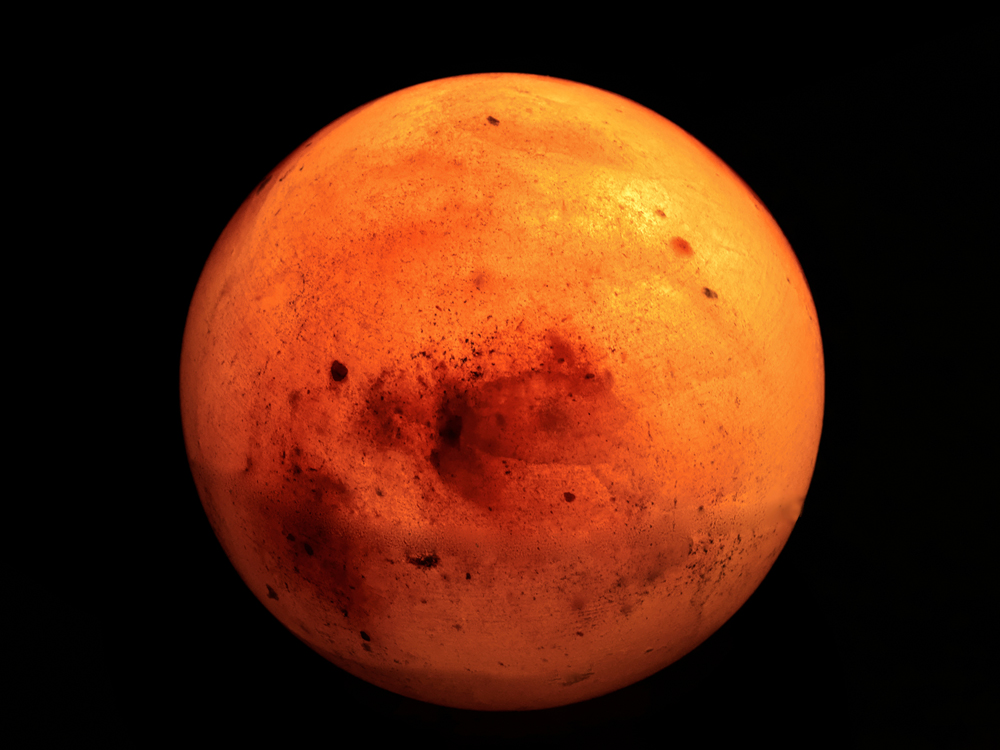

Increible viaje en el cual exploraras mas alla de los confines mismos de este planeta para terminar en la Luna, antes un satelite ,pero ahora podria ser tu nuevo hogar. puedes disfrutar las maravillas de la tecnologia moderna hoy en este paradiciaco lugar y vivir ese sueño que todos tuvimos de chicos hoy.
Precio:40.000.000

Marte, el gran planeta rojo, increible lugar y ahora es mejor ya que logramos quitar esos seres que anidaron en el emisferio sur. Disfrute de esta interminable playa de arena roja. Su verano eterno es lo mejor para los que siempre se quejan del frio y lo mejor es que no hay mosquitos, ademas para los amantes del alpinismo puede disfrutar subir el monte olimpo. Ademas puede disfrutar de ver un sol 75% mas grande de lo que se ve desde esta parte del sistema solar (la compañia no aconseja mirar el sol desde ningun punto, de hacerlo tampoco se hara responsable por daño ocular y/o muerte cerebral)
Precio:100.000.000$
Aunque ya no puede ser llamado "planeta" hoy en dia aun asi es un perfecto lugar en el cual ir a vivir, es azul como el mar azul y ademas puede darle la vuelta al mundo mientras pasea al perro, o ver el anochecer, atardecer y amanecer todo al mismo tiempo desde su ventana en la comodida de su sillon hecho de cuero de vacas plutonicas
Precio:75.000.000$